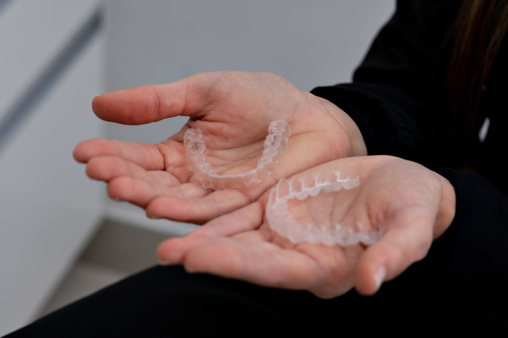
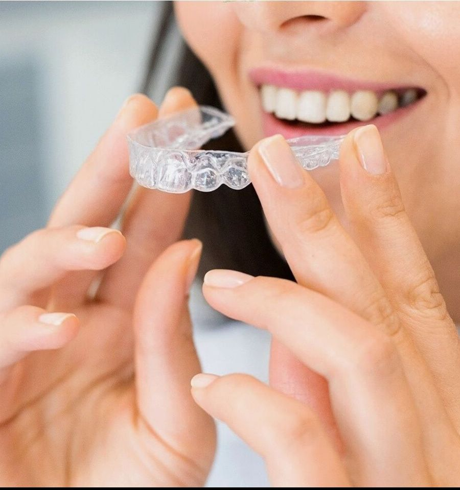

 Kirazlı Mah. Mevlana Cad. No: 47 D — Kirazlı Metro yakını
Yol tarifi al
Kirazlı Mah. Mevlana Cad. No: 47 D — Kirazlı Metro yakını
Yol tarifi al
Harita: © OpenStreetMap katkıcıları

Merak ettikleriniz
Aşağıdaki sorulardan birini seçtiğinizde WhatsApp yazışması o soruyla başlar. Dilerseniz kendi sorunuzu da yazabilirsiniz.
Telefonla görüşmeyi tercih ederseniz 0541 732 43 76 numarasından ulaşabilirsiniz.


Tedavi alanları
Aşağıdaki alanların tamamında tedavi uygulanmaktadır. Durumunuza hangi tedavinin uygun olduğu, muayene sonrasında hekiminiz tarafından belirlenir.

Genel Diş Tedavisi
Çürük dolgusu, diş taşı temizliği ve beyazlatma gibi koruyucu ve estetik uygulamalar.

Kanal Tedavisi
Diş özüne ulaşan çürük ve iltihaplarda dişin çekilmeden korunmasına yönelik tedaviler.

Ağız ve Diş Cerrahisi
Diş çekimi, gömülü diş operasyonları, implant ve ağız içi cerrahi girişimler.

Protez ve Kaplama
Eksik ya da aşınmış dişlerin kaplama, köprü ve protezlerle yeniden kazandırılması.

Dişeti Tedavisi
Dişeti kanaması, çekilmesi ve sallanan dişlere yönelik periodontal tedaviler.

Ortodonti ve Çene Eklemi
Diş teli, şeffaf plak, gece plağı ve çene eklemi (TME) tedavileri.

Çocuk Diş Hekimliği
Süt dişi tedavileri ve çürüğü önlemeye yönelik koruyucu uygulamalar.
Bize ulaştığınızda
Telefonu, klinikte o an görevli olan ekibimiz yanıtlar. Şikâyetinizi dinler; hemen gelmenizin gerekip gerekmediğini, gerekiyorsa sizi hangi saatte bekleyeceğimizi bildiririz. Geç saatlerde de aynı şekilde ulaşabilirsiniz.
Muayene öncesinde merak ettiklerinizi telefonla da iletebilirsiniz.

İletişim
Google Haritalar’da görüntüle